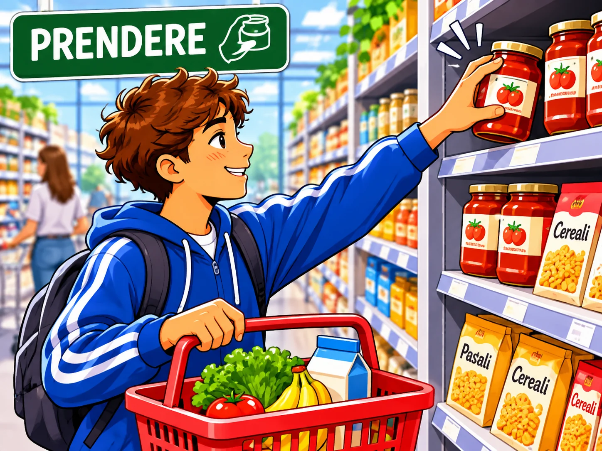

ACQUISTARE
to purchase
Acquisto il pane al supermercato.
Coniuga il verbo ↗Grocery shopping
10 verbi utili · Livello A1–A2
to purchase
Acquisto il pane al supermercato.
Coniuga il verbo ↗to look for
Cerco il latte nel negozio.
Coniuga il verbo ↗to buy
Compro le mele al mercato.
Coniuga il verbo ↗to count
Conto i soldi alla cassa.
Coniuga il verbo ↗to pay
Pago con la carta.
Coniuga il verbo ↗to weigh
Peso le banane.
Coniuga il verbo ↗
to take / get
Prendo un vasetto di marmellata.
Coniuga il verbo ↗to choose
Scelgo la frutta fresca.
Coniuga il verbo ↗to spend
Spendo dieci euro per la spesa.
Coniuga il verbo ↗to find
Trovo il riso sullo scaffale.
Coniuga il verbo ↗